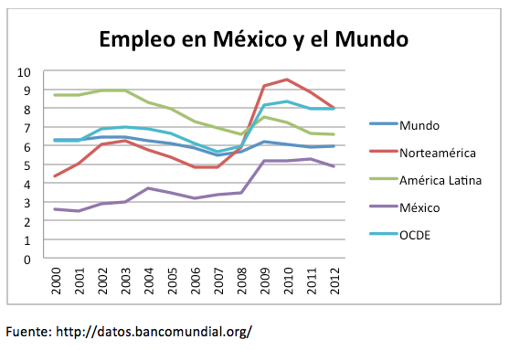
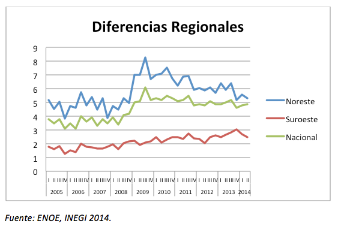
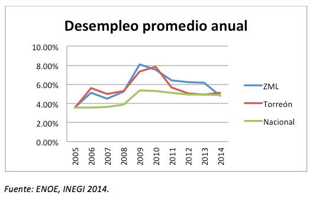
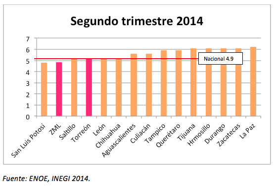
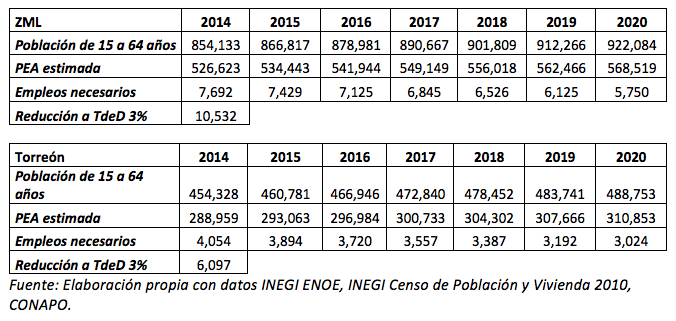
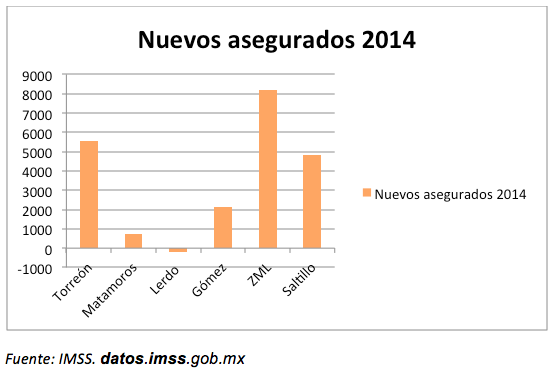
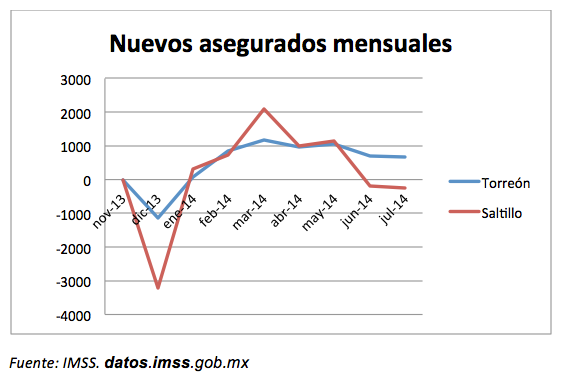

Síntesis
- México se encuentra históricamente entre los países con menores tasas de desempleo en el mundo.
- El desempleo proyecta características propias de cada mercado laboral por lo cual es importante no sólo compararlo con diversas regiones sino principalmente con largos periodos de tiempo.
- El norte del país ha registrado niveles de desempleo superiores a la media nacional sin que ello tenga una correlación directa con la generación de riqueza y bienestar.
- A partir de 2005 Torreón y la Zona Metropolitana de La Laguna pasó de mantener niveles de desempleo cercanos a la media nacional, se separó a la alza llegando a niveles superiores al 9 % en 2009.
- En el segundo trimestre de 2014 Torreón registra una tasa de desempleo de 5.11 % y la Zona Metropolitana de 4.81 % mientras la media nacional es de 4.9.
- Ciudades como Querétaro Aguascalientes y León presentan niveles superiores de desempleo.
- De acuerdo al crecimiento poblacional, Torreón requiere crear 4,054 nuevos empleos durante 2014 y 7,692 en la ZML.
- A su vez para reducir la tasa de desempleo a 3 % es necesario la generación de 6,097 adicionales en Torreón y 10,532 en la ZML, para superar el déficit creado de 2005 a la fecha.
- Durante 2014 el IMSS registra en Torreón 5,543 trabajadores asegurados más que en diciembre de 2013. Para la ZML los trabajadores asegurados ascienden a 8,216 más que el año anterior.
- En el contexto de Coahuila el municipio de Torreón es actualmente quien tiene más trabajadores asegurados con 167,134, mientras Saltillo le sigue con 165,009 a Julio de 2014.
Tasa de desempleo en México y el Mundo
El empleo es uno de los principales indicadores, que muestra el desempeño económico de una ciudad, región o país. Si bien hay una serie de variables asociadas como lo son salarios promedio, los sectores de ocupación y tipos de empleo, la tasa de desempleo es el indicador de mayor comparabilidad temporal que puede medir de forma general el entorno económico y laboral en un entorno determinado.
Históricamente el empleo en México se ha mantenido entre los más bajos del mundo, esto se explica dado a que la tasa de desempleo es un reflejo de diversas características del mercado laboral, que en el caso de México se caracteriza por el alto autoempleo, y la estabilidad de salarios nominales con fluctuación de salarios reales, que en México es medido trimestralmente por la Encuesta Nacional sobre Ocupación y Empleo (ENOE) de acuerdo a criterios de la Organización Internacional del Trabajo (OIT).
Sin embargo dentro del mismo país existen diferencias estructurales en el mercado laboral por lo cual históricamente el norte del país soporta mayores tasas de desempleo, mientras en el sur se registran las tasas más bajas. La Región Noreste del país que incluye Coahuila, Nuevo León y Tamaulipas, registra los mayores niveles de desempleo históricamente, mientras el Suroeste conformado de acuerdo al INEGI por Chiapas, Guerrero y Oaxaca, muestra los niveles más bajos. Esto muestra que la tasa de desempleo no tiene una correlación directa con el nivel de ingresos y los indicadores de bienestar.
Evolución del empleo en Torreón y La Laguna
La ENOE se levanta en todo el país, sin embargo el INEGI sólo realiza sobrerrepresentación para obtener resultados de 32 ciudades, una por cada estado, siendo Saltillo y Durango las consideradas para sus respectivos estados. Esto ha llevado a que durante los últimos años no se cuenten con estadísticas de desempleo en nuestra región. Sin embargo a través de los micro datos de la propia encuesta se ha accedido a los resultados de las 1600 encuestas levantadas en Torreón y 3200 en la Zona Metropolitana de La Laguna cada trimestre.
Desde hace 9 años Torreón y la Zona Metropolitana de la Laguna se habían separado a la alza de la media nacional. Entre 2009 y 2010 se llegaron a medias anuales cercanas al 8% de desempleo abierto mientras en el tercer trimestre de 2009 se alcanzó el 9. 47 % en Torreón y 9.19 en la Zona metropolitana. Esta separación de la media nacional se ha reducido en 2014, donde en el último trimestre la ZML registro 4.81% de desempleo mientras a nivel nacional se registro 4.9 %.
Actualmente la ZML y Torreón se encuentra dentro de las ciudades con las que compite en inversiones y calidad de vida entre las de menor tasa de desempleo.
Prospectiva de población económicamente activa y empleo
En base a las proyecciones de población de CONAPO, y los últimos datos sobre Población Económicamente Activa (PEA) en Torreón y La Laguna, en 2014 la PEA es para Torreón 288,958 y para la ZML 526,623, de los cuales están empleados 274,193 y 500,292 respectivamente. De acuerdo a ello para mantener una tasa de desempleo de alrededor de 5 %, en Torreón se requieren generar en Torreón 4,054 empleos durante 2014 y 7,692 en la ZML. [1]
A su vez para reducir la tasa de desempleo a 3 % es necesaria la generación de 6,097 adicionales en Torreón y 10,532 en la ZML.
Tendencias del empleo formal
A su vez un indicador que complementa la información aquí presentada es el número de trabajadores asegurados en el Instituto Mexicano del Seguro Social. A través de la estrategia de datos abiertos del Gobierno Federal se cuenta con información mensual a nivel municipal a partir de noviembre de 2013. A Julio de 2014 Torreón registró 167,134 trabajadores asegurados, esto es 5,543 más que en diciembre de 2013. Para la ZML los trabajadores asegurados ascienden a 261,332, 8216 más que el año anterior.
En el contexto de Coahuila el municipio de Torreón es actualmente quien tiene más trabajadores asegurados, ya que Saltillo de 163,416 en Diciembre de 2013 a 165,009 en Julio de 2014.
Considerando que Torreón requiere 4,054 nuevos empleos anuales y la ZML 7,692, se concluye que en el presente año se logrará reducir aún más tasa de desempleo aminorando el déficit de puestos de trabajo que dejaron los años anteriores principalmente 2009.
* Con colaboración de Gloria Liliana Gaytán Arocha.
[1]La Población Económicamente Activa se estima en base a la PEA del Censo de Población y Vivienda 2010, en el cual Torreón contaba con 40 % de su población económicamente activa y 39 % la Zona Metropolitana. Sin embargo al tener CONAPO proyecciones de población por grupos de edad, la estimación se hace en base a la proporción de PEA sobre los rangos de edad de 15 a 64 años, considerando así la dinámica demográfica de los próximos años. La proporción PEA sobre el grupo de edad de 15 a 64 de referencia, es para Torreón es 63.3 % y para La Laguna 61.6 %.